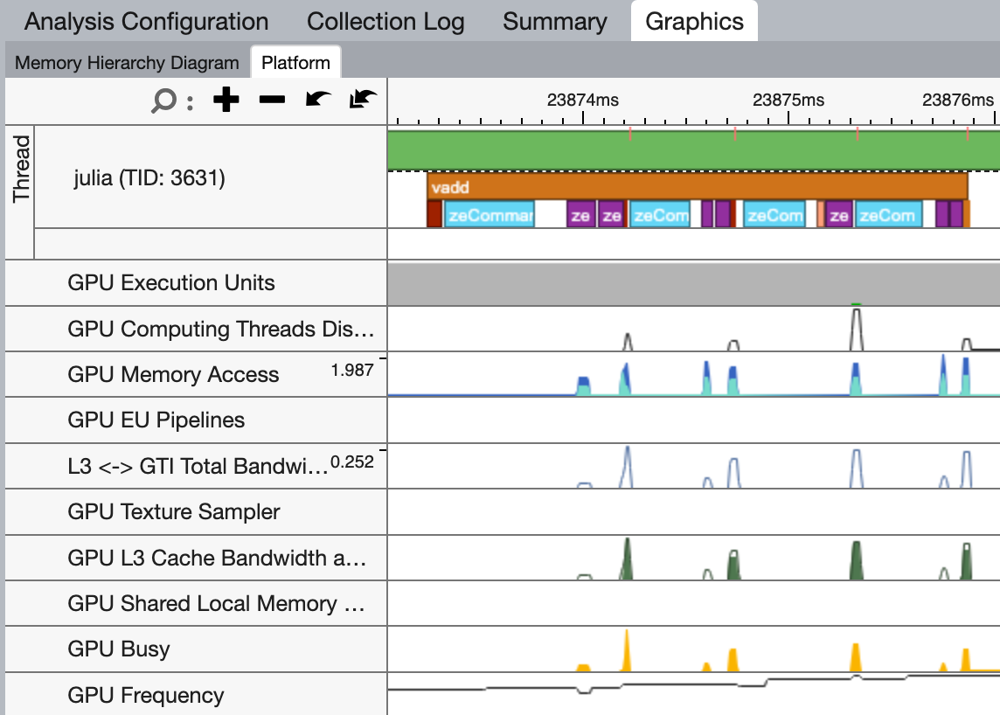
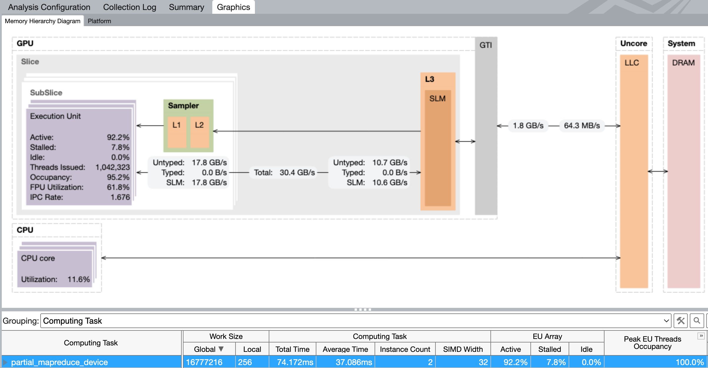

Profiling oneAPI.jl applications with VTune
Tim Besard
Profiling GPU applications is hard, so this post shows how to use Intel's VTune Profiler to profile GPU applications written in Julia with oneAPI.jl.
Because of the asynchronous nature of GPU execution, profiling GPU applications with Julia's tried and tested tools like @profile or even @time can be misleading: They will only show the time spent on the CPU, and will likely report that your application is spending most of its time waiting for the GPU.
To get a better understanding of what is happening on the GPU, we need specialized tools. In this post, we'll show how to use Intel's VTune Profiler to profile GPU applications written in Julia using oneAPI.jl.
Set-up
Start by downloading and installing the Intel VTune Profiler. This does not require administrative permissions, and will install in your home folder under the intel directory. On Linux, binaries will appear in ~/intel/oneapi/vtune/latest/bin64. There are three that are particularly important:
vtune: a command-line tool to profile applications;vtune-gui: a graphical user interface to profile applications, or to visualize the results of a command-line profiling session;vtune-backend: a daemon that creates a web interface for VTune, which you can use to profile applications both locally and remotely.
Hello VTune!
Let's start with a simple example: A Julia program that computes the sum of two arrays (i.e., the vadd example from the oneAPI repository):
using oneAPI
function kernel(a, b, c)
i = get_global_id()
@inbounds c[i] = a[i] + b[i]
return
end
function vadd(a, b)
d_a = oneArray(a)
d_b = oneArray(b)
d_c = similar(d_a)
@oneapi items=size(d_c) kernel(d_a, d_b, d_c)
Array(d_c)
end
function main(N=256)
a = round.(rand(Float32, N) * 100)
b = round.(rand(Float32, N) * 100)
c = vadd(a, b)
end
main()We've tweaked this example to make it more suited for profiling: We've enclosed the main application in a function so that it gets compiled, and we've increased the array sizes to make the GPU work harder.
There are several ways to profile this application. We'll start by demonstrating the command-line interface:
$ vtune -collect gpu-offload julia vadd.jl
vtune: Collection started.
vtune: Collection stopped.
vtune: Using result path `/home/tim/Julia/pkg/oneAPI/r000gh'
GPU Time: 0.002s
EU Array Stalled/Idle: 100.0% of Elapsed time with GPU busy
| The percentage of time when the EUs were stalled or idle is high, which has a
| negative impact on compute-bound applications.
FPU Utilization: 0.0% of Elapsed time with GPU busy
...This will run the application, and collect a number of GPU-related metrics. A summary is shown in the terminal, and a more detailed report will be written to a directory in the current working directory. You can open that report with the graphical user interface, possibly even on a different machine:
$ vtune-gui r000ghInstrumenting the application
The trace we just collected includes the time spent compiling our application, making it difficult to analyze what is happening. To refine the trace, we can instrument our application with Intel's Instrumentation and Tracing Technology (ITT) APIs:
only start the profiler when we're running code of interest;
add markers to the trace to indicate what is happening.
We can interface with the ITT APIs using the IntelITT.jl package. Let's update our example:
using oneAPI, IntelITT
# same as before
function main(N=256)
a = round.(rand(Float32, N) * 100)
b = round.(rand(Float32, N) * 100)
c = IntelITT.@task "vadd" oneAPI.@sync vadd(a, b)
end
# warm-up
main()
# actual profile
IntelITT.@collect main()Here, the IntelITT.@collect macro will start and stop the collection, so we should launch VTune with the -start-paused option:
$ vtune -collect gpu-offload -start-paused julia vadd.jlIn the GUI, we can now clearly see a nicely packed stream of API calls, grouped under the vadd task we added. Note that because API calls are asynchronous, i.e. they return immediately before the GPU has executed them, I grouped them under a oneAPI.@sync call so that the task not only captures the time spent on the CPU, but also the time spent on the GPU. This may not be wanted for your application.

Kernel details
The timeline view is great for getting an application-level overview of what is happening, but once you've isolated a kernel that doesn't perform as expected, you may want to switch from the GPU Offload to the GPU Compute Hotspots analysis. Here, you get a more detailed view of what's happening during execution on the GPU, including the memory bandwidth and execution properties:
$ vtune -collect gpu-hotspots -start-paused julia vadd.jl
Many of these analysis can be configured to collect more or less data, at the cost of more or less overhead.
Working remotely
In many cases, your local system will not have a GPU, and you will want to profile an application running on a remote system. As shown above, you can use the vtune CLI to create a trace and open that locally using vtune-gui, however there is an easier way: The vtune-backend daemon.
Start by launching the VTune back-end on the remote system:
$ vtune-backend --enable-server-profiling --web-port 8443 --log-to-consoleIf your remote system is directly reachable, you want to add --allow-remote-access --base-url "https://remoteServer:8443". However, most people will need to set-up an SSH tunnel:
$ ssh -L 8443:localhost:8443 remoteServerYou can now access the VTune GUI at https://localhost:8443/. Note that the first time you connect, you will need to do so using the one-time URL that is shown in the terminal where you launched the vtune-backend daemon.
The web interface that vtune-backend provides is identical to the GUI from vtune-gui: Start by creating a new project, and configuring an analysis: Select the local VTune profile server, enter the path to the Julia executable along with arguments and a working directory, and select the GPU Offload analysis type:

To start the analysis, click the big blue play button. If you use IntelITT.@collect to restrict the trace to the code of interest, use the second button with the pause symbol.
Give it a try!
Hopefully, this guide has shed some light on how to accurately profile oneAPI.jl applications using Intel's VTune Profiler. It turns out that one package could significantly benefit from some rigorous profiling: oneAPI.jl! Until now, development has focussed on correctness and usability, leaving considerable room for performance enhancements.
If you have access to an Intel GPU and want to gain experience profiling GPU applications with VTune, we encourage you to get involved! A good starting point would be analyzing some of oneAPI.jl's array operations like mapreduce or broadcast to identify potential bottlenecks. For more information or any queries, feel free to open an issue on GitHub, or join the discussion on Slack or Discourse. Your help could make a significant difference!